Engineering diagrams · Microsoft 365 edition · October 2026
System design diagrams
Architecture, security, flows, lifecycles, sequences, SharePoint data model, scalability and roadmap for the restaurant operations apps built on Maginhawa's Microsoft 365 (SharePoint + Power Automate + Entra ID). Companion to the Tech stack and architecture plan.
Contents
- Overview
The simple picture - Overview
System context - Overview
Architecture in layers - Overview
Who uses which device - Overview
Security and access - Finance EOD
Current EOD system (as-is) - Finance EOD
Migration plan - Finance EOD
EOD submission, step by step - Finance EOD
Trading calculations (corrected) - Flows
Power Automate flow catalogue - Flows
Close-the-day flow (manager) - Flows
The closed loop: failed check to repair cost - Flows
Shared tablet: PIN login - Flows
Offline capture and sync through Graph - Lifecycles
Checklist run lifecycle - Lifecycles
Work order lifecycle - Data model
Data model overview: all 31 lists - Data model
SharePoint lists: operations - Data model
SharePoint lists: maintenance - Data model
SharePoint lists: trading / EOD - Scale and plan
Scalability tiers - Scale and plan
Build roadmap
Overview · 1/21
The simple picture
Our apps sign in through Entra ID (MSAL), call the Microsoft Graph API with the token, and Graph reads and writes SharePoint. Power Automate sits beside SharePoint: flows start when items change or on a schedule, write results back, and send emails. Excel and Power BI read SharePoint.
Overview · 2/21
System context
Who uses the system, what we build (apps and console), what Maginhawa's Microsoft 365 provides, and the optional later integrations.
Overview · 3/21
Architecture in layers
Our apps → Entra sign-in → Graph (standard) or optional secured flow calls (premium) → SharePoint lists and libraries ↔ Power Automate → outputs.
Overview · 4/21
Who uses which device
Kitchen tablet on a site device account with staff PINs; phone and web console with personal Microsoft logins; finance in Excel / Power BI; inspectors receive the EHO pack PDF.
Overview · 5/21
Security and access
Entra groups map to SharePoint permissions. The device accounts and staff can add and read operational lists; finance has its own lists; restricted lists are for Owners/Admins only; the service account owns every flow. The app registration is limited to the one site.
Finance EOD · 6/21
Current EOD system (as-is)
Today's Netlify form: browser-only calculations, a public Power Automate URL (red = risk), a row appended to Excel, then the targets lookup and emails.
Finance EOD · 7/21
Migration plan
Stage 1 replaces the EOD form within weeks (SharePoint lists, flow F01, Excel view, Netlify retired). Stage 2 adds operations. Stage 3 adds integrations and AI, and moves to a database only if selling or 50+ sites.
Finance EOD · 8/21
EOD submission, step by step
The app saves a draft and a preview on the device, queues and uploads through Graph, and the unique Site + Date key blocks duplicates. Flow F01 recalculates, checks, writes official totals, creates a work order for urgent maintenance and emails finance.
Finance EOD · 9/21
Trading calculations (corrected)
How each EOD figure is derived, with the old form's bugs fixed: discounts are subtracted from net, delivery and wage settings come from lists, and the official totals are written by flow F01.
Flows · 10/21
Power Automate flow catalogue
Eleven flows, F01 to F12, with their triggers and what they write or send. All are owned by the service account and use standard connectors.
Flows · 11/21
Close-the-day flow (manager)
Ops checks, then sales, adjustments and cash, then delivery, staff and feedback, then submit and outputs.
1 · Ops checks

→
2 · Sales, adjustments, cash

→
3 · Delivery, staff, feedback

→
4 · Submit and outputs

Flows · 12/21
The closed loop: failed check to repair cost
Flow F04 checks the completed checklist against RulesThresholds. A failure forces a corrective action and a re-check (F05); repeats escalate to a work order on the asset, then the contractor email (F06), the resolution, the invoice and the asset's cost history, all feeding the EHO pack.
Flows · 13/21
Shared tablet: PIN login
The tablet stays signed in with the site device account. Staff pick their name and enter a PIN checked against the cached Staff list (works offline). Every record is stamped with the person, the device and both timestamps.
Flows · 14/21
Offline capture and sync through Graph
Morning cache, instant local pass/fail, queued $batch uploads with ClientId so retries never duplicate, Retry-After on throttling, background photo upload, then flow F04 confirms the results.
Lifecycles · 15/21
Checklist run lifecycle
Created each morning by flow F02, then completed, missed (alert from F03), auto-closed or cancelled during closures.
Lifecycles · 16/21
Work order lifecycle
From reported to closed. 'Closed' requires the invoice to be matched and approved.
Data model
Data model overview: all 31 lists
Five groups. Reference data is set up once. Checklists create one Run per checklist per day, and every answer is a Response. Failed responses, corrective actions and EOD maintenance notes all lead to WorkOrders on an Asset. Each TradingDay holds lunch and dinner sessions with their line items. Every operational list carries Site + BusinessDate (indexed). Orange = highest-volume lists.
Data model · 17/21
SharePoint lists: operations
Sites, staff, devices, versioned checklist templates and checkpoints, schedules, runs, responses (the compliance record), corrective actions, day closures, sign-offs and certificates.
Data model · 18/21
SharePoint lists: maintenance
Assets, contractors, work orders (from failed checks, fault reports, EOD notes), the statutory compliance calendar, invoices and the visitor log.
Data model · 19/21
SharePoint lists: trading / EOD
Trading days and sessions, adjustments with reason codes, delivery sales and refunds, shift staff, feedback and targets. Columns marked 'flow F01' are written only by the flow.
Scale and plan · 20/21
Scalability tiers
Comfortable at 9 sites; workable at about 20–40 sites with archiving, licences and Power BI; at 50+ sites or when selling, move the data to a database. The apps don't change.
Scale and plan · 21/21
Build roadmap
Setup, Stage 1 EOD (retire Netlify), Stage 2 operations, hardening and a pilot at all 9 sites, then Stage 3 integrations and AI.